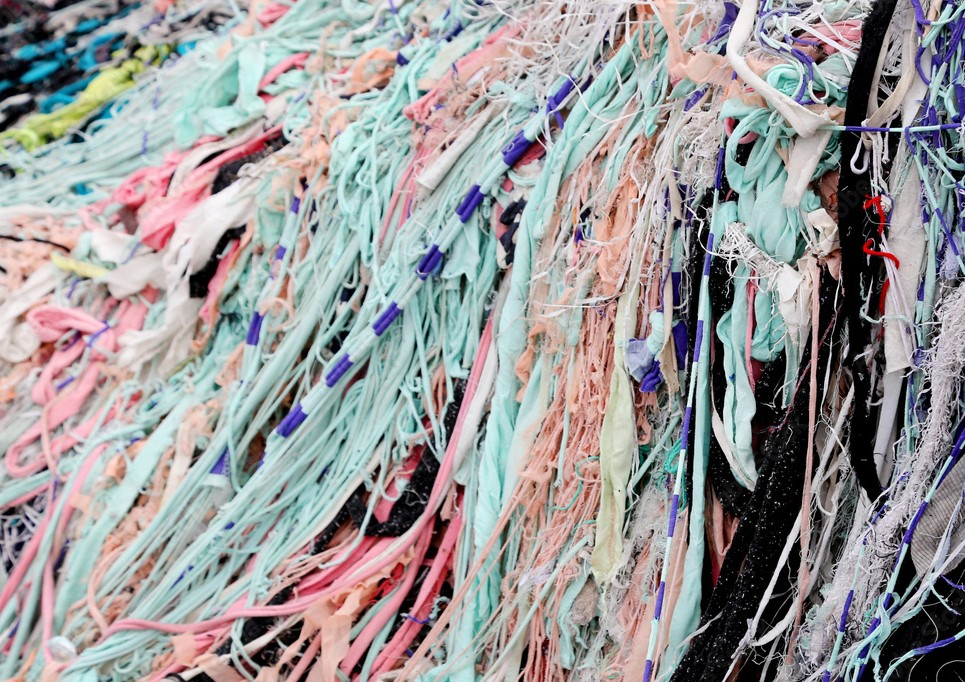
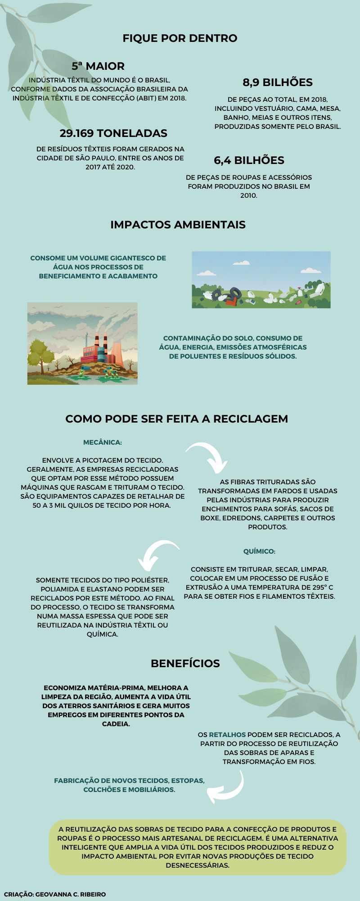

A indústria da moda está no centro de um enorme problema ambiental e tem obrigado marcas a repensarem seu modelo de negócio e de produção. Isso porque, um volume enorme de material têxtil é desperdiçado todos os anos na confecção de roupas, usadas poucas vezes, e que na hora do descarte seguem direto para o aterro sanitário.
Os impactos decorrentes da produção percorrem toda a cadeia produtiva têxtil: desde o plantio do algodão até a confecção da peça, além dos impactos derivados da comercialização. O cultivo do algodão, em virtude da grande quantidade de pesticidas, inseticidas e fertilizantes empregados para a obtenção da fibra, causa contaminação da água, do solo e da fauna local. Além de consumir um volume gigantesco de água nos processos de beneficiamento e acabamento - alvejar e tingir produtos têxteis. Ao longo da cadeia produtiva têxtil, os impactos ambientais envolvem contaminação do solo, consumo de água, de energia, emissões atmosféricas de poluentes e resíduos sólidos.
Diante desse cenário, uma das possibilidades para evitar a destinação inadequada dos retalhos é a reciclagem de tecidos, que consiste no processo de reutilizar as sobras de aparas e transformá-las em fios. Por meio de processos industriais, os fios podem ser usados para a fabricação de novos tecidos, estopas, colchões e mobiliários.
